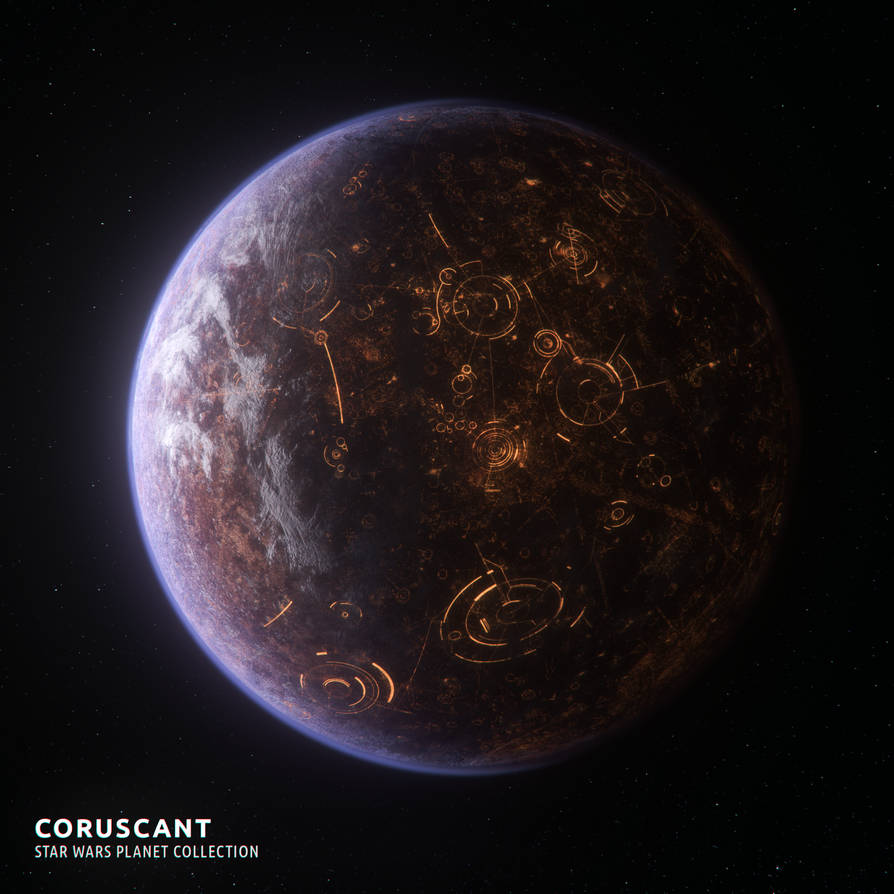
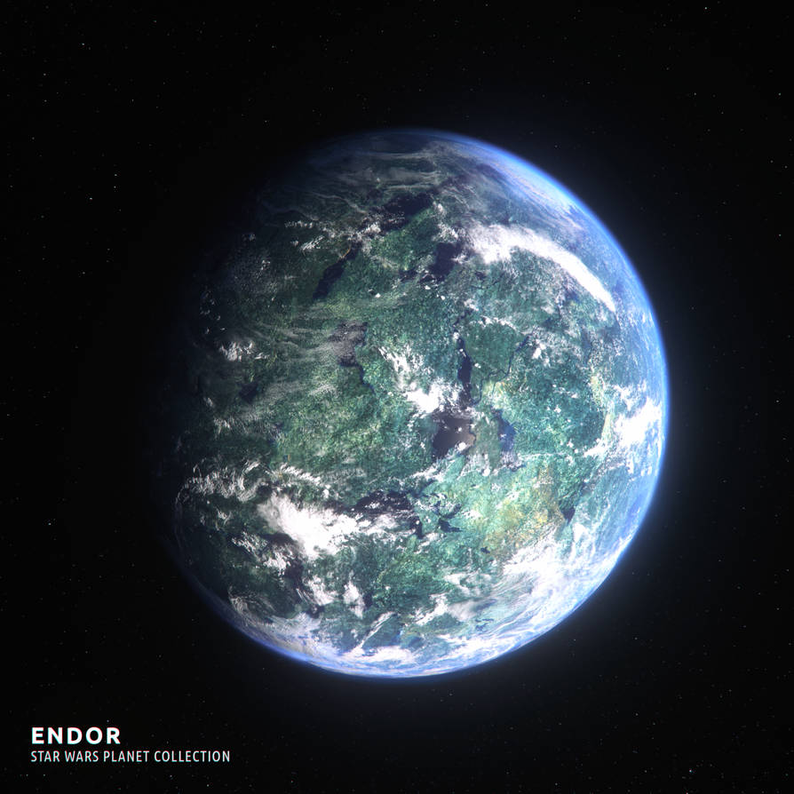
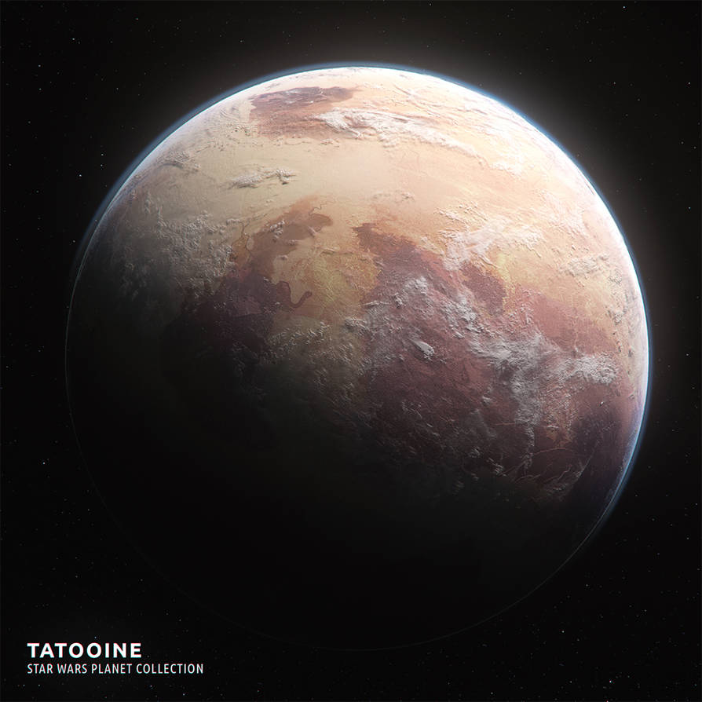
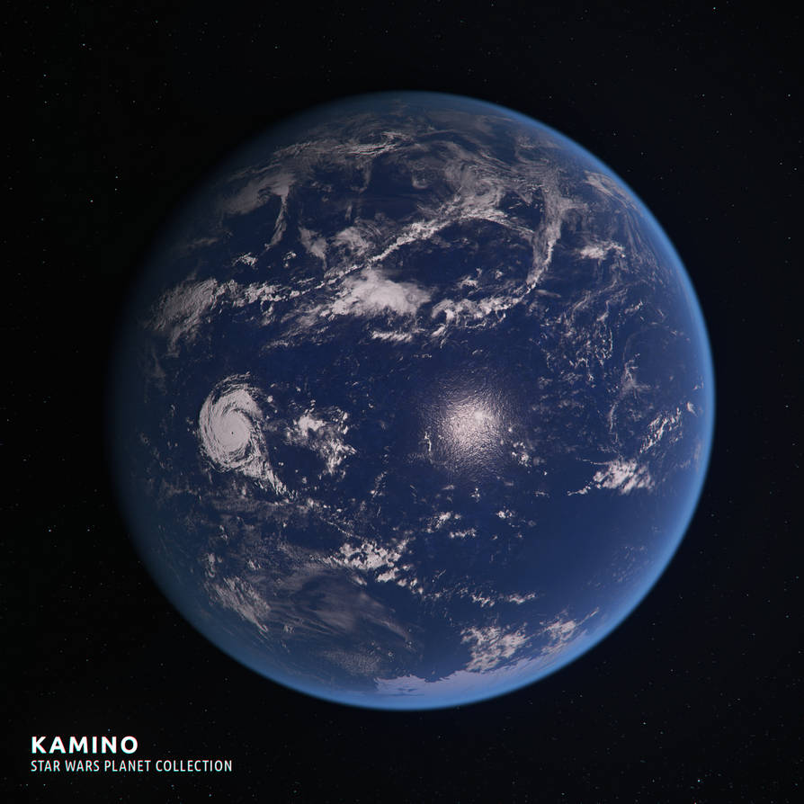

Explore planetary records from across the galaxy

Classification: Ecumenopolis
Region: Core Worlds
A planet-wide city and the political center of the galaxy.

Classification: Forest Moon
Region: Outer Rim Territories
A forest-covered moon known for its towering trees and native Ewoks.

Classification: Desert Planet
Region: Outer Rim Territories
An arid world with twin suns, vast deserts, and remote settlements.

Classification: Ocean Planet
Region: Beyond the Outer Rim
A stormy ocean world known for its advanced cloning facilities.
Planetary artwork by EricWhitted on DeviantArt.
Star background from WallpaperSafari
Blue Starry Night Sky Wallpapers